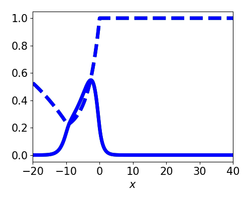

Wave response theory for neural representations of apparent motion
Sage Shaw - Oct 20th, 2023
Kilpatrick Lab at University of Colorado Boulder
The Kilpatrick Lab
Prof. Zack Kilpatrick
Dr. Tahra Eissa
Heather Cihack
Sage Shaw
Outline
- Neural field model
- Traveling wave solutions
- The wave response function
- Entrainment
- Apparent Motion Entrainment
Neural Field Model
Biological Neural Networks
Image courtesy of Heather Cihak.
Retinotopic Map
- Primary visual area (V1)
- Sensory areas have spatially organized topologies

Neural Field Models
- Organize neural populations on a line
- Connectivity is determined by distance
- Extend to a continuum limit
Synaptic Depression
Rapid firing depletes pre-synaptic resources.

Model
\begin{align*} \tau_u \frac{\partial}{\partial t}\underbrace{u(x,t)}_{\text{Activity}} &= -u + \underbrace{\overbrace{w}^{\substack{\text{network}\\\text{connectivity}\\\text{kernel}}} \ast \big( q f[u] \big)}_{\substack{\text{network}\\\text{stimulation}}} \\ \tau_q \frac{\partial}{\partial t}\underbrace{q(x,t)}_{\substack{\text{Synaptic}\\\text{Efficacy}}} &= 1 - q - \underbrace{\beta}_{\substack{\text{rate of}\\\text{depletion}}} q \underbrace{f(u)}_{\substack{\text{firing-rate}\\\text{function}}} \end{align*}
Model
- $f[u] = H(u - \theta)$ - All or nothing firing-rate function.
- $w(|x-y|) = \frac{1}{2}e^{-|x-y|}$ - network connectivity kernel
- $\frac{1}{1+\beta} = \gamma \in (0, 1]$ - Relative timescale of synaptic depletion.
1D Neural Fields


- Progressive fronts
- Regressive fronts
- Pulses

Model

Traveling wave solutions
Front solutions
- $\xi = x - ct$
- Active region: $(-\infty, 0)$
- Restrict to $c > 0$

- Linearizes equations
- Decouples $q$ from $u$
- $U(-\infty) = \gamma > \theta$
$$ \theta = \frac{\gamma + c\tau_q\gamma}{2(1+c\tau_q\gamma)(1+c\tau_u)} $$
Front Bifurcations

Front Bifurcations

Pulse solutions
- $\xi = x - ct$
- Active region: $(-\Delta, 0)$
- Linearizes equations
- Decouples $q$ from $u$
Two consistency equations for $c$ and $\Delta$.
Pulse Speed and Width
Wave response
Correcting Position
- Position encoded as a pulse
- Must be corrected
Spatially homogeneous perturbation

Asymptotic Approximation
add stimulus terms $$ \begin{align*} \tau_u u_t &= -u + w * (q f[u]) + \varepsilon I_u(x, t) \label{eqn:forced_u} \\ \tau_q q_t &= 1 - q - \beta q f[u] + \varepsilon I_q(x, t) \label{eqn:forced_q} \end{align*} $$substitute with the expansion $$ \begin{align*} u(\xi, t) &= U\big( \xi - \varepsilon \nu(t) \big) + \varepsilon \phi + \mathcal{O}(\varepsilon^2) \\ q(\xi, t) &= Q\big( \xi - \varepsilon \nu(t) \big) + \varepsilon \psi + \mathcal{O}(\varepsilon^2) \end{align*} $$
Collect the $\mathcal{O}(\varepsilon)$ terms
$$\begin{align*} \underbrace{\begin{bmatrix}\tau_u & 0 \\ 0 & \tau_q\end{bmatrix}}_{T} \begin{bmatrix}\phi \\ \psi \end{bmatrix}_t + \mathcal{L}\begin{bmatrix}\phi \\ \psi \end{bmatrix} &= \begin{bmatrix} I_u + \tau_u U' \nu' \\ I_q + \tau_q Q' \nu ' \end{bmatrix} \end{align*}$$ $$ \mathcal{L}(\vec{v}) = \vec{v} - cT \vec{v} + \begin{bmatrix} -w Q f'(U) * \cdot & -w f(U) * \cdot \\ \beta Q f'(U) & \beta f(U) \end{bmatrix} \vec{v} $$Bounded solutions exist if the inhomogeneity is orthogonal to $\mathcal{N}\{\mathcal{L^*}\}$. For $(v_1, v_2) \in \mathcal{N}\{\mathcal{L^*}\}$ $$\begin{align*} -c \tau_u v_1' &= v_1 - Qf'(U) \int w(y,\xi) v_1(y) \ dy + \beta Qf'(U) v_2 \\ -c \tau_q v_2' &= v_2 - f(U) \int w(y, \xi) v_1(y) \ dy + \beta f(U) v_2. \end{align*}$$
Wave response function
$$ \nu(t) = - \frac{\int_\mathbb{R} v_1 \int_0^t I_u(\xi, \tau) \ d\tau + v_2 \int_0^t I_q(\xi, \tau) \ d\tau \ d\xi}{\int_\mathbb{R} \tau_u U' v_1 + \tau_q Q' v_2 \ d\xi} $$Spatially Homogeneous perturbation
$$ \varepsilon I_u = \varepsilon \delta(t - 1) $$

Spatially localized perturbation
Spatially localized perturbation
Spatially localized perturbation

Spatially localized perturbation

Entrainment
Tracking a moving stimulus
Tracking a moving stimulus

old expasion
$$ \begin{align*} u(\xi, t) &= U\big( \xi - \varepsilon \nu \big) + \varepsilon \phi + \mathcal{O}(\varepsilon^2) \\ q(\xi, t) &= Q\big( \xi - \varepsilon \nu \big) + \varepsilon \psi + \mathcal{O}(\varepsilon^2) \end{align*} $$new expansion
$$ \begin{align*} u(\xi, t) &= U\big( \xi - \varepsilon \nu \big) + \varepsilon \phi(\xi \color{blue}{- \varepsilon \nu}, t) + \mathcal{O}(\varepsilon^2) \\ q(\xi, t) &= Q\big( \xi - \varepsilon \nu \big) + \varepsilon \psi(\xi \color{blue}{- \varepsilon \nu}, t) + \mathcal{O}(\varepsilon^2) \end{align*} $$old wave response
$$ \frac{\partial}{\partial t}\nu = \frac{ \langle v_1 ,I_u(\xi, \tau)\rangle + \langle v_2, I_q(\xi, \tau)\rangle }{-\tau_u \langle v_1, U' \rangle - \tau_q \langle v_2, Q' \rangle} $$new wave response
$$ \frac{\partial}{\partial t}\nu = \frac{ \langle v_1 ,I_u(\xi + \varepsilon \nu + ct, \tau)\rangle + \langle v_2, I_q(\xi + \varepsilon \nu + ct, \tau)\rangle }{\underbrace{-\tau_u \langle v_1, U' \rangle - \tau_q \langle v_2, Q' \rangle}_{K}} $$Entrainment to a moving Square wave
Entraining to a moving stimulus
Asymptotic threshold
$$ \Delta_c \lt \varepsilon \frac{c\tau_u}{K}$$
Apparent Motion Entrainment


Asymptotic Entrainment Threshold
$$ \Delta_c < \varepsilon \frac{c\tau_u}{K} \frac{T_\text{on}}{T} $$Thank you
- Manuscript on ArXiv soon!
- Slides and Public Notes: shawsa.github.io
- Code repository: github.com/shawsa/neural-field-synaptic-depression